<!doctype html>
<html lang="en">
<head>
<meta charset="utf-8">
<!-- CUSTOMIZE THIS! -->
<title>Einführung in die Digital Humanities</title>
<meta name="author" content="Christof Schöch">
<!-- END -->
<meta name="description" content="Slides">
<meta name="apple-mobile-web-app-capable" content="yes">
<meta name="apple-mobile-web-app-status-bar-style" content="black-translucent">
<meta name="viewport" content="width=device-width, initial-scale=1.0, maximum-scale=1.0, user-scalable=no, minimal-ui">
<link rel="stylesheet" href="css/reveal.css">
<link rel="stylesheet" href="css/theme/simple.css" id="theme">
<!-- Code syntax highlighting -->
<link rel="stylesheet" href="lib/css/zenburn.css">
<!-- Printing and PDF exports -->
<script>
var link = document.createElement( 'link' );
link.rel = 'stylesheet';
link.type = 'text/css';
link.href = window.location.search.match( /print-pdf/gi ) ? 'css/print/pdf.css' : 'css/print/paper.css';
document.getElementsByTagName( 'head' )[0].appendChild( link );
</script>
<!--[if lt IE 9]>
<script src="lib/js/html5shiv.js"></script>
<![endif]-->
</head>


<body>
<div class="reveal">
<div class="slides">
<section data-markdown="" data-separator="^\n---\n" data-separator-vertical="^\n--\n" data-charset="utf-8" data-background-image="img/basics/uni-trier-mini.png" data-background-size="50px" data-background-position="top right">
<script type="text/template">

## Datenmodellierung 2: Datenbanken<br/>
<hr/>
<br/>
<br/>Vorlesung *Einführung in die Digital Humanities*
<br/>MSc Digital Humanities | Wintersemester 2020/21
<br/>
<br/>Prof. Dr. Christof Schöch
<br/>
<br/>
<hr/>
<br/>


---
## Sitzungsüberblick
<br/>
1. Datenbanken, wie und wozu?
2. Domäne: der zu modellierende Gegenstandsbereich
3. Konzeptuelles Modell: Entity-Relationship-Model
4. Logisches Modell: Relational Database / Relationale Algebra
5. Implementierung: Structured Query Language


---
# 1. Datenbanken, wie und wozu?

--
# (A) Datenbanken...
<br/>
* eignen sich zur Organisation stark strukturierter Datenbestände <!-- .element: class="fragment" data-fragment-index="1" -->
* können mit umfangreichen, detaillierten Datenbeständen befüllt werden <!-- .element: class="fragment" data-fragment-index="2" -->
* erlauben präzise und effiziente Suchabfragen auf diesen Beständen <!-- .element: class="fragment" data-fragment-index="3" -->
* erlauben Zugriff und Bearbeitung durch mehrere Nutzer:innen gleichzeitig <!-- .element: class="fragment" data-fragment-index="4" -->
* => erfüllen Grundbedürfnisse geisteswiss. Forschung nach Organisation, Speicherung und Abfragen von Informationen <!-- .element: class="fragment" data-fragment-index="5" -->


--
## Datenbanksystem
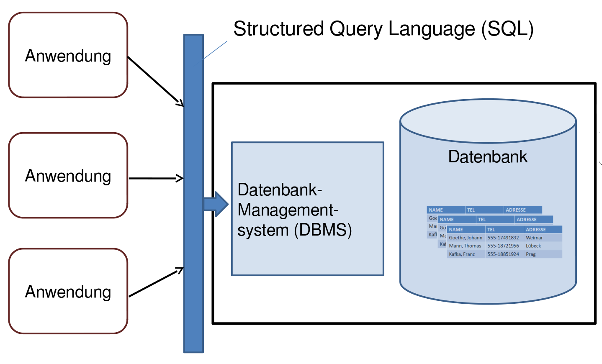</img>

--
## Begriffe
<br/>
* Datenbanksystem: das Gesamtsystem <!-- .element: class="fragment" data-fragment-index="1" -->
* Datenbank-Management-System (DBMS): die Infrastruktur für die Datenbank <!-- .element: class="fragment" data-fragment-index="2" -->
* Datenbank: enthält die Daten in strukturierter Form <!-- .element: class="fragment" data-fragment-index="3" -->
* Datenbestand: die Datensätze, die vorhanden sind <!-- .element: class="fragment" data-fragment-index="4" -->
* Anwendungen: greifen über Schnittstellen des DBMS auf die Daten zu <!-- .element: class="fragment" data-fragment-index="5" -->


--
## Zwei Aspekte
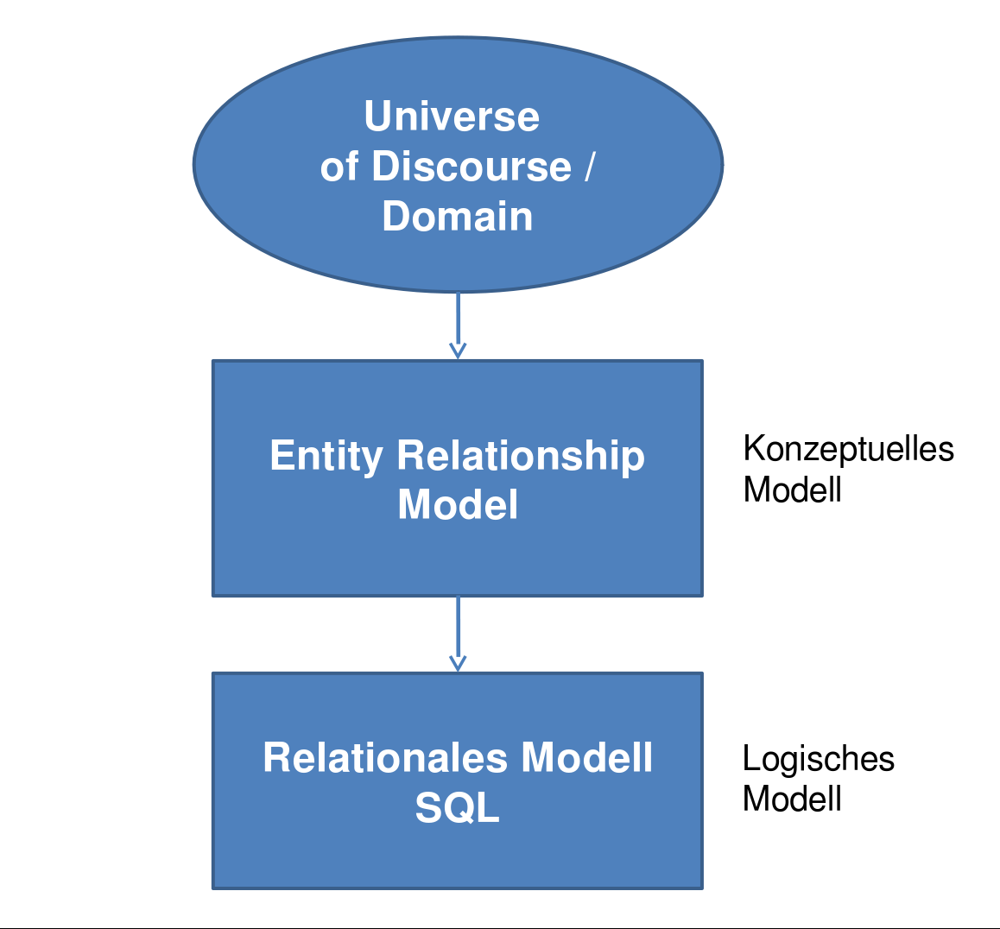</img>


--
## Prototypischer Ablauf
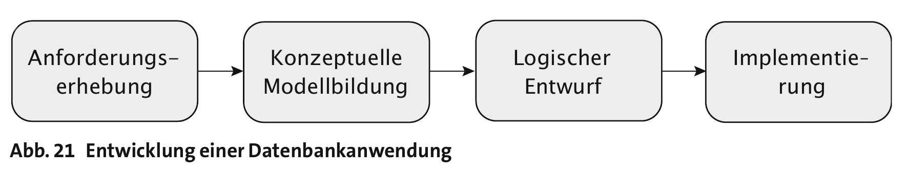</img>
<br/>
(Quelle: Harald Klinke 2017)


---
# 2. Domäne und Anforderungen


--
## Domäne: Bibliothek

--
##  Nutzungsszenario
<br/>
>Eine Geisteswissenschaftlerin möchte ihre Bibliothek verwalten. Die Bibliothek umfasst zahlreiche Texte vom Mittelalter bis zur Gegenwart. Die Datenbank soll es ermöglichen, schnell zu überprüfen, welche Autoren und welche Titel vorhanden sind. Die Geisteswissenschaftlerin möchte zudem sortieren können, und zwar nach dem Geburtsdatum bzw. Sterbedatum der Autoren, aber auch nach dem Namen der Autoren. Auf jeden Fall soll für jedes Buch die ISBN verzeichnet werden.

--
## Anforderungsanalyse
<br/>
* Autoren und Bücher unterscheiden
* Titel, Geburtsdatum, Sterbedatum, ISBN vorhalten
* Sortierbarkeit ermöglichen

--
## Naiver Ansatz: Liste
<br/>
<small>

* Marx, Karl; Das kommunistische Manifest ; 1818; 1883; 1242829340229
* Herder, J. ; Bildung der Menschheit ; 1744; 1803; 1534932829103
* Smith, J. ; An Inquiry into the Nature...; 1744; 1803; 1534932829103
* Marx, Karl ; Das Kapital ; 1818; 1883; 1231288828783
* Rousseau, J.-J.; Du contrat social ; 1712; 1778; 1665229181734

</small>

--
## Verbesserung: Tabelle
<small>

| Autor         | Titel                       |Geb.|Tod | ISBN        |
|---------------|-----------------------------|----|----|-------------|
|Marx, Karl     |Das kommunistische Manifest  |1818|1883|1242829340229|
|Herder, J.     |Bildung der Menschheit       |1744|1803|1534932829103|
|Smith, J.      |An Inquiry into the Nature...|1744|1803|1534932829103|
|Marx, Karl     |Das Kapital                  |1818|1883|1231288828783|
|Rousseau, J.-J.|Du contrat social            |1712|1778|1665229181734|

</small>

--
## So weit, so gut...
<br/>
* Entitäten: <!-- .element: class="fragment" data-fragment-index="1" -->
    * Bibliothek
    * Buch, Titel, ISBN
    * Autor, Name, Geburtsdatum, Sterbedatum
* Sortierbar, suchbar, filterbar <!-- .element: class="fragment" data-fragment-index="2" -->
* Nachteile <!-- .element: class="fragment" data-fragment-index="3" -->
    * Redundanzen
    * keine expliziten Beziehungen
    * keine Mehrfachbearbeitung
    * keine Schnittstelle
    * (und: wenig performant)

---
# 3. Konzeptuelles Modell: <br/>Entity-Relationship-Model

--
# (A) Einführend

--
## Vier Aufgaben des konzeptuellen Datenmodells
<br/>
* Klassifizierung: Festlegung der Objekttypen (Entitäten) <!-- .element: class="fragment" data-fragment-index="1" -->
* Abstraktion: Bestimmung der relevanten Eigenschaften (Attribute) <!-- .element: class="fragment" data-fragment-index="2" -->
* Beziehungen: Beschreibung der Zusammenhänge zwischen den Objekten (Relationen) <!-- .element: class="fragment" data-fragment-index="3" -->
* Identifizierung: Festlegung von eindeutigen Namen (Schlüssel) <!-- .element: class="fragment" data-fragment-index="4" -->

--
## Entity-Relationship-Modell
<br/>
* konzeptuelles Modell / Datenmodell: abstrakt
* erfüllt die vier genannten Aufgaben
* abstrakte Struktur der Daten (nicht die Daten selbst)
* bspw. in grafischer Notation festgehalten

--
## Entity-Relationship-Diagramm
</img>

--
##Elemente des ER-Modells
<br/>
* Entitäten (Objekttypen) <!-- .element: class="fragment" data-fragment-index="1" -->
* Attribute (Eigenschaft der Objekte) <!-- .element: class="fragment" data-fragment-index="2" -->
* Werte (Ausprägung einer Eigenschaft) <!-- .element: class="fragment" data-fragment-index="3" -->
* Relationen (Beziehungen zwischen Entitäten) <!-- .element: class="fragment" data-fragment-index="4" -->
* Kardinalität von Beziehungen (mengenmäßige Beziehung) <!-- .element: class="fragment" data-fragment-index="5" -->


--
## Kardinalität?
</img>
<br/>
Typen: 1:1, 1:n, n:1, n:m

--
# (B) Beispiel Bibliothek

--
## Bibliothek: Bücher und Autoren
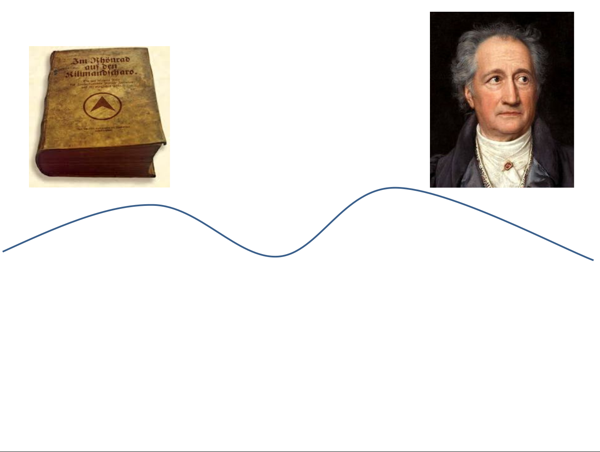</img>
<br/><small>(Quelle für Beispiel und Darstellung: Fotis Jannidis, Würzburg. Bildquelle: Wiki Commons, https://commons.wikimedia.org/wiki/File:Johann_Wolfgang_von_Goethe_(Josef_Stieler).jpg), gemeinfrei.</small>

--
## Klassifikation
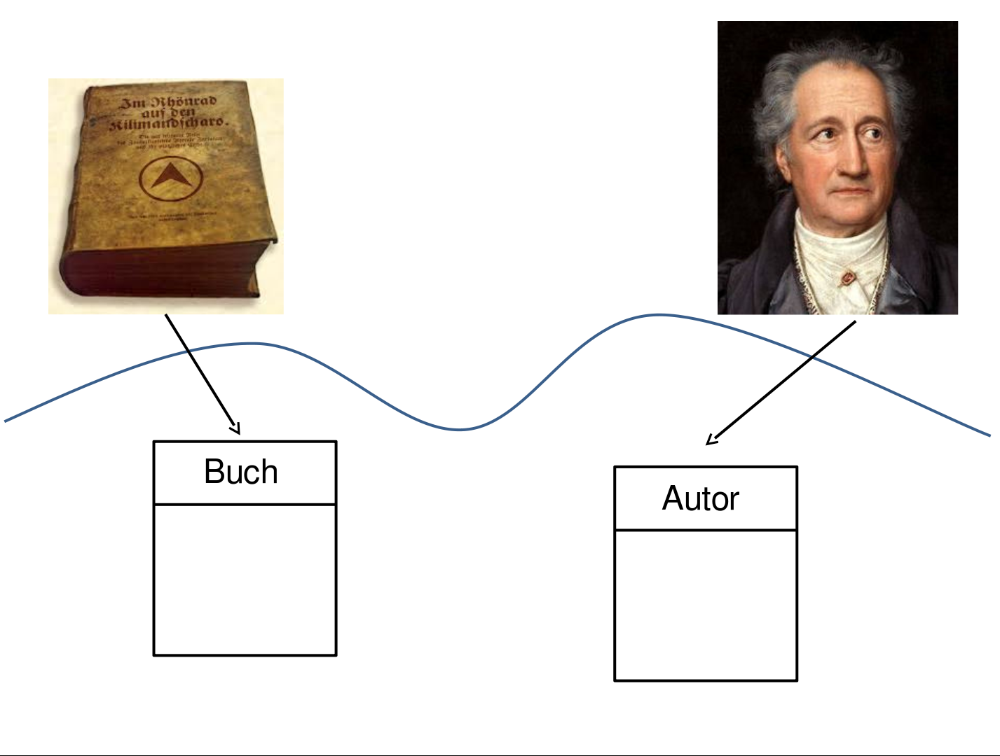</img>
<br/><small>(Quelle für Beispiel und Darstellung: Fotis Jannidis, Würzburg. Bildquelle: Wiki Commons, https://commons.wikimedia.org/wiki/File:Johann_Wolfgang_von_Goethe_(Josef_Stieler).jpg), gemeinfrei.</small>

--
## Abstraktion
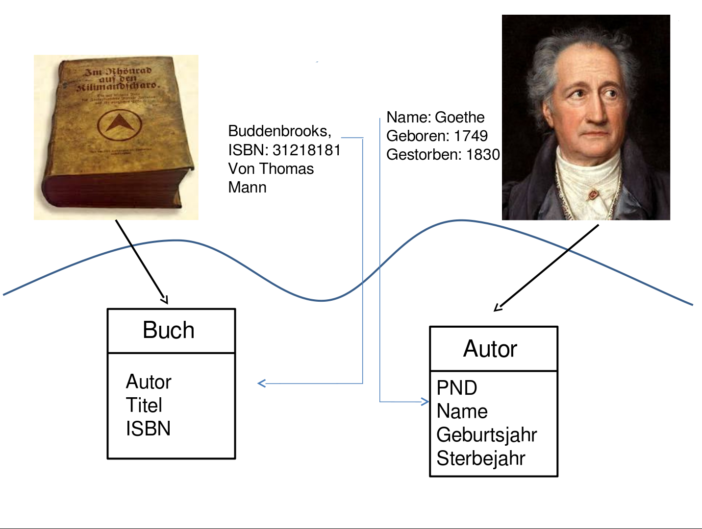</img>
<br/><small>(Quelle für Beispiel und Darstellung: Fotis Jannidis, Würzburg. Bildquelle: Wiki Commons, https://commons.wikimedia.org/wiki/File:Johann_Wolfgang_von_Goethe_(Josef_Stieler).jpg), gemeinfrei.</small>

--
## Identifizierung
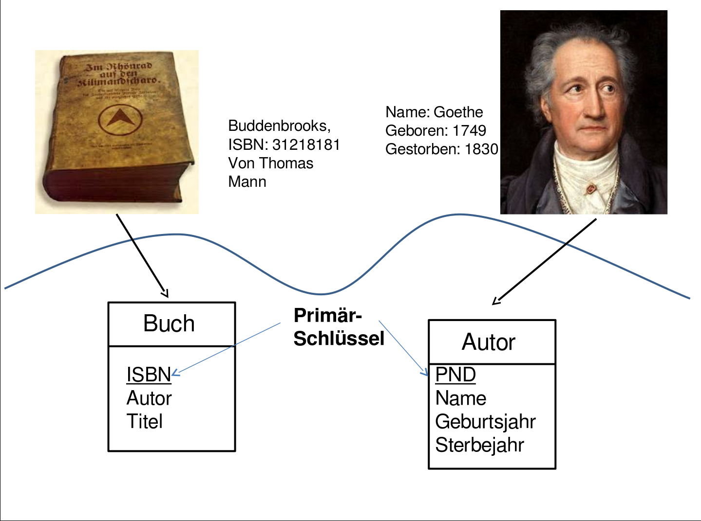</img>
<br/><small>(Quelle für Beispiel und Darstellung: Fotis Jannidis, Würzburg. Bildquelle: Wiki Commons, https://commons.wikimedia.org/wiki/File:Johann_Wolfgang_von_Goethe_(Josef_Stieler).jpg), gemeinfrei.</small>

--
## Beziehungen
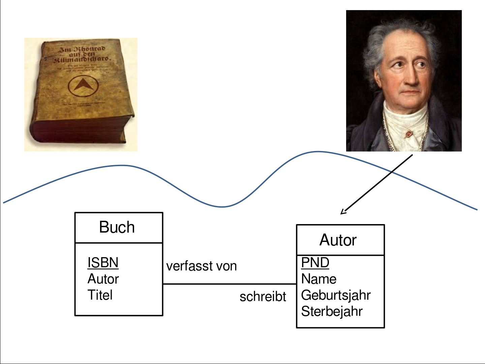</img>
<br/><small>(Quelle für Beispiel und Darstellung: Fotis Jannidis, Würzburg. Bildquelle: Wiki Commons, https://commons.wikimedia.org/wiki/File:Johann_Wolfgang_von_Goethe_(Josef_Stieler).jpg), gemeinfrei.</small>

--
## Kardinalität
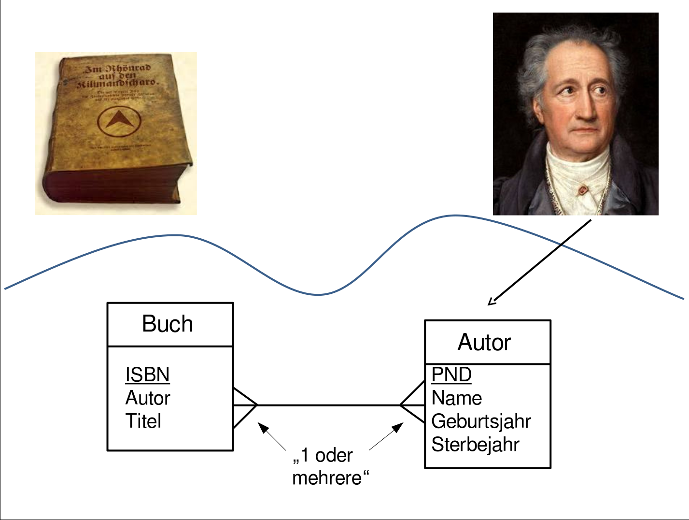</img>
<br/><small>(Quelle für Beispiel und Darstellung: Fotis Jannidis, Würzburg. Bildquelle: Wiki Commons, https://commons.wikimedia.org/wiki/File:Johann_Wolfgang_von_Goethe_(Josef_Stieler).jpg), gemeinfrei.</small>

---
# Logisches Datenmodell: Relational Database Model (RDM)

--
# (A) Grundideen


--
## Ebenen
1. Konzeptuelles Datenmodell: abstrakte Struktur und Elemente der Domäne
2. Logisches Datenmodell: Umsetzung des konzetuellen Models

--
## Grundideen des RDM
<br/>
* Implementiert das ER-Modell: Entitäten, Attribute, Relationen <!-- .element: class="fragment" data-fragment-index="1" -->
* Jede Klasse von Entität (gleiche Attribute) bekommt eine separate Tabelle <!-- .element: class="fragment" data-fragment-index="2" -->
* Jeder Eintrag bekommt einen Identifier ("key") <!-- .element: class="fragment" data-fragment-index="3" -->
* Relationen zwischen Entitäten laufen über die "keys" <!-- .element: class="fragment" data-fragment-index="4" -->

--
## Datenbankschema
<br/>
* Legt die Struktur der Datenbank fest <!-- .element: class="fragment" data-fragment-index="1" -->
* welche Tabellen (="Relationen") gibt es? <!-- .element: class="fragment" data-fragment-index="2" -->
* Für jede Tabelle: Welche Spalten gibt es? <!-- .element: class="fragment" data-fragment-index="3" -->
* Für jede Spalte: Welcher Datentyp ist erlaubt? (str, int, bool) <!-- .element: class="fragment" data-fragment-index="4" -->


--
# (B) Normalisierung


--
## Normalisierung: Definition
<br/>
>Unter Normalisierung eines relationalen Datenschemas (Tabellenstruktur) versteht man die Aufteilung von Attributen (Tabellenspalten) in mehrere Relationen (Tabellen) gemäß den Normalisierungsregeln (s. u.), so dass eine Form entsteht, die keine Redundanzen mehr enthält. <br/><br/>(Quelle: Wikipedia, Art. "Normalisierung (Datenbank)",  https://de.wikipedia.org/wiki/Normalisierung_(Datenbank) )

--
## Was sind "Normalformen"?
<br/>
* Normalformen sind Klassen von Qualitätskriterien <!-- .element: class="fragment" data-fragment-index="1" -->
* Sie werden nach und nach angewandt, um die Qualität der Datenbankstruktur zu verbessern <!-- .element: class="fragment" data-fragment-index="2" -->
* Wir beschränken uns auf die erste, zweite und dritte Normalform <!-- .element: class="fragment" data-fragment-index="3" -->
* Normalisierung hat ihre Grenzen: es kann auch ineffizient werden <!-- .element: class="fragment" data-fragment-index="4" -->

--
## Normalformen (NF)
* 1. NF: Jedes Attribut der Relation hat atomare Werte; es gibt keine Wiederholungsgruppen
* 2. NF: Attribute sind "voll funktional abhängig" vom (ganzen) Primärschlüssel
* 3. NF: Kein Nichtschlüsselattribut ist von einem anderen Nichtschlüsselattribut abhängig

--
## Ausgangslage
<small>

|  ISBN       | Titel                       | Autor         |Geb.|Tod |
|-------------|-----------------------------|---------------|----|----|
|1242829340229|Das kommunistische Manifest, Das Kapital|Marx, Karl|1818|1883|
|1534932829103|Bildung der Menschheit       |Herder, J.     |1744|1803|
|1534932829103|An Inquiry into the Nature...|Smith, J.      |1744|1803|
|1665229181734|Du contrat social            |Rousseau, J.-J.|1712|1778|

</small>

--
## Erste Normalform
<small>

|  ISBN       | Titel                       |AutorVN| AutorNN |Geb.|Tod |
|-------------|-----------------------------|-------|---------|----|----|
|1242829340229|Das kommunistische Manifest  |Karl   | Marx    |1818|1883|
|1242829340229|Das Kapital                  |Karl   | Marx    |1818|1883|
|1534932829103|Bildung der Menschheit       | J.    |Herder   |1744|1803|
|1534932829103|An Inquiry into the Nature...| J.    |Smith    |1744|1803|
|1665229181734|Du contrat social            | J.-J. |Rousseau |1712|1778|

</small>

(= Atomisierung, keine Wiederholungsgruppen)


--
## Zweite Normalform

<small>

| ISBN        | Titel                       |
|-------------|-----------------------------|
|1242829340229|Das kommunistische Manifest  |
|1534932829103|Bildung der Menschheit       |
|1534932829103|An Inquiry into the Nature...|
|1231288828783|Das Kapital                  |
|1665229181734|Du contrat social            |

<br/>

| GND      | AutorVN |AutorNN | Geb.|Tod |
|----------|---------|--------|-----|----|
| 19283746 | Karl    | Marx   | 1818|1883|
| 98761234 | J.      | Herder | 1744|1803|
| 55652008 | J.      | Smith  | 1744|1803|
| 11223344 | J.-J.   |Rousseau| 1712|1778|

</small>

(= Abhängigkeit der Attribute vom Primärschlüssel)


--
## (a) Fremdschlüssel

<small>

| ISBN        | Titel                       | GND      |
|-------------|-----------------------------|----------|
|1242829340229|Das kommunistische Manifest  | 19283746 |
|1534932829103|Bildung der Menschheit       | 98761234 |
|1534932829103|An Inquiry into the Nature...| 55652008 |
|1231288828783|Das Kapital                  | 19283746 |
|1665229181734|Du contrat social            | 11223344 |

<br/>

| GND      | AutorVN |AutorNN | Geb.|Tod |
|----------|---------|--------|-----|----|
| 19283746 | Karl    | Marx   | 1818|1883|
| 98761234 | J.      | Herder | 1744|1803|
| 55652008 | J.      | Smith  | 1744|1803|
| 11223344 | J.-J.   |Rousseau| 1712|1778|

</small>


--
## (b) Assoziationstabelle

<small>

| ISBN        | Titel                       |
|-------------|-----------------------------|
|1242829340229|Das kommunistische Manifest  |
|1534932829103|Bildung der Menschheit       |
|...|...            | 

<br/>

| GND      | AutorVN |AutorNN | Geb.|Tod |
|----------|---------|--------|-----|----|
| 19283746 | J.      | Herder | 1744|1803|
| 98761234 | J.      | Herder | 1744|1803|
| ... | ...      | | | |

<br/>

| GND      | ISBN        |
|----------|-------------|
| 19283746 |1242829340229|
| 98761234 |1534932829103|
| ... | ... |

</small>


--
## Dritte Normalform

<small>

| Verlags-ID | Name     | PLZ   | Ort       |
|----------|------------|-------|-----------|
| 123   | De Gruyter | 10785 | Berlin    |
| 456   | Metzler    | 70182 | Stuttgart |
| 789   | transcript | 33602 | Bielefeld |

</small>

(Indirekte Abhängigkeit: PLZ bedingt Ort)


--
## Dritte Normalform

<small>

| Verlags-ID | Name     | PLZ   |
|----------|------------|-------|
| 123   | De Gruyter | 10785 |
| 456   | Metzler    | 70182 |
| 789   | transcript | 33602 |

<br/>

| PLZ   | Ort       |
|-------|-----------|
| 10785 | Berlin    |
| 70182 | Stuttgart |
| 33602 | Bielefeld |

</small>

(Indirekte Abhängigkeit aufgelöst)


--
# (C) Relationale Algebra

--
## Edgar F. Codd (1923-2003)
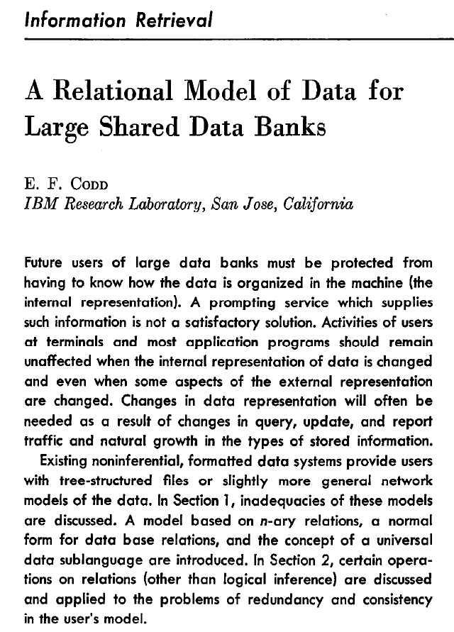</img>
<br/>
Entwickelte das relationale Datenbankmodell
<br/><br/><small>Codd, Edgar F. (1970). "A relational model of data for large shared data banks". Communications of the ACM 13/6.</small>
<br/><small>(Porträt von Codd: siehe:  https://en.wikipedia.org/wiki/Edgar_F._Codd#/media/File:Edgar_F_Codd.jpg)</small>

--
## Codd

>"It was Codd's very great insight that a database could be thought of as a set of relations, that a relation in turn could be thought of as a set of propositions …, and hence that all of the apparatus of formal logic could be directly applied to the problem of database access and related problems."

<br/><br/><small>(Date, C. J. (2001). The Database Relational Model: A Retrospective Review and Analysis. Reading: Addison-Wesley.)</small>


--
## Formale Logik?
<br/>
* Jede Tabelle ist ein Typ von Relation <!-- .element: class="fragment" data-fragment-index="1" -->
* Jede Tabellenzeile enthält Aussagen <!-- .element: class="fragment" data-fragment-index="2" -->
    * Marx, ist Autor von, Das Kapital
    * Marx, ist gestorben, 1883
* Formales Schließen: <!-- .element: class="fragment" data-fragment-index="3" -->
    * Das Kapital, wurde verfasst vor, 1883
    * (Denn: Autoren verfassen nur zu Lebzeiten Werke)

---
# 4. Structured Query Language (SQL)

--
## SQL
<br/>
* SQL – Structured Query Language
* Standardsprache zur Erzeugung, Abfrage und Verwaltung von Datenbanken
* Keine 1:1 Umsetzung des relationalen Datenmodells, aber nahe dran
* Wird von allen relationalen Datenbanken unterstützt
* ANSI-Standard (aber es gibt Dialekte)

--
## Drei Bereiche von SQL
* Datendefinition <!-- .element: class="fragment" data-fragment-index="1" -->
    * Data Definition Language
    * bspw.: Tabelle erstellen:
    * CREATE TABLE Autoren ...
* Datenmanipulation <!-- .element: class="fragment" data-fragment-index="2" -->
    * Data Manipulation Language
    * bspw.: Eintrag in einer Tabelle vornehmen:
    * INSERT INTO Autoren ...
* Datenabfrage <!-- .element: class="fragment" data-fragment-index="3" -->
    * Data Query Language
    * bspw.: Suchabfrage formulieren
    * SELECT Name FROM Autoren ...


--
## SQL in Python
<br/>
* Library: sqlite3
* Dokumentation: https://docs.python.org/3.7/library/sqlite3.html

--
## Data Definition: CREATE

<pre>
<code>
CREATE TABLE Buecher (
   ISBN INTEGER PRIMARY KEY,
   GND INTEGER,
   TITEL CHARACTER (50)
);
</code>
</pre>
<br/>
* Erstellt eine neue Tabelle "Buecher" mit ISBN, GND und Titel
* Weitere Befehle: Ändern (ALTER), Löschen (DROP) einer Tabelle


--
## Data Manipulation: INSERT

<pre>
<code>
INSERT INTO Buecher (ISBN,GND,TITEL)
   values (3211810002, 449382, "Faust")
</code>
</pre>
<br/>
* Fügt neue Datensätze in eine Tabelle ein

--
## Data Query: Bausteine
<br/>
* SELECT: welche Informationen sollen angezeigt werden?
* FROM: welcher Tabellen/Spalten sollen abgefragt werden?
* WHERE: welche Bedingungen werden formuliert?

--
## Einfaches Beispiel
<br/>
<pre>
<code>
SELECT * FROM Buecher
WHERE TITEL=="Faust"
</code>
</pre>
<br/>
* Zeige alle Spalten an, 
* aus der Tabelle "Buecher";
* und zwar für diejenigen Einträge, <br/>bei denen der Titel "Faust" lautet


--
## Einfaches Beispiel
<br/>
<pre>
<code>
SELECT TITEL, JAHR FROM Buecher
WHERE GND=="98765"
</code>
</pre>
<br/>
* Zeige die Spalten "Titel" und "Jahr" an;
* aus der Tabelle "Buecher";
* und zwar für den Eintrag, <br/>der die GND 98765 hat.


---
# Anwendungen

--
## SQL in Python
<br/>
* Library: sqlite3
* Dokumentation: https://docs.python.org/3.7/library/sqlite3.html

--
## Beispiel in LibreOffice Base
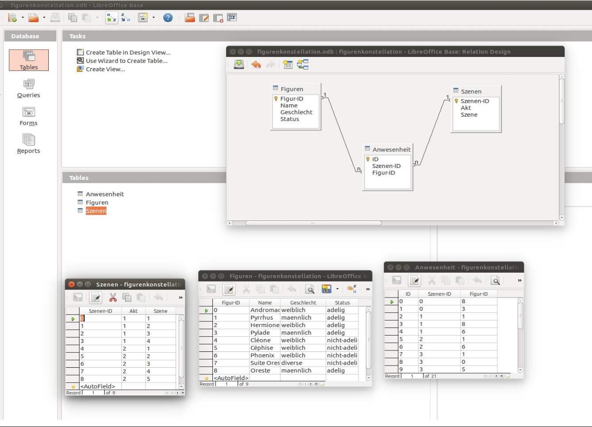</img>

--
## MySQL Workbench
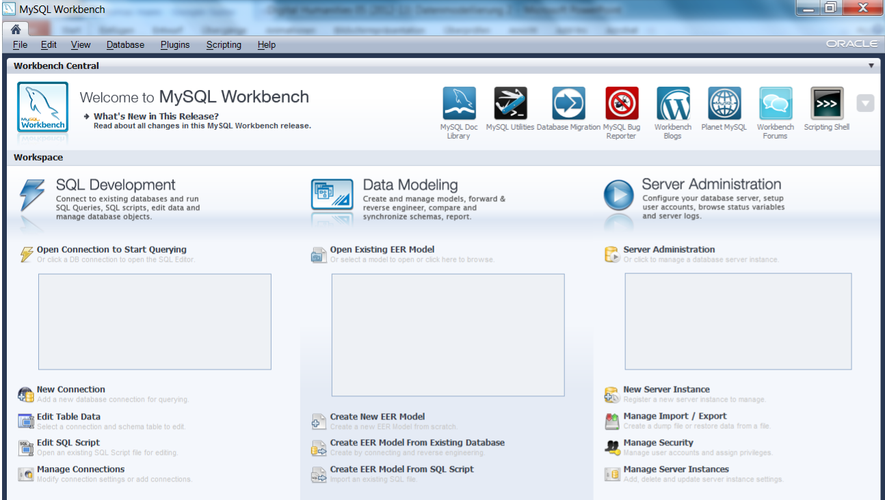</img>

--
## Wikidata SPARQL Endpoint
<a href="https://query.wikidata.org/#SELECT%20%3Fcountry%20%3FcountryLabel%20%3FcapitalLabel%20%0A%20%20%20WHERE%20%7B%0A%20%20%20%20%20wd%3AQ458%20wdt%3AP150%20%3Fcountry.%20%20%20%23%20European%20Union%0A%20%20%20%20%20OPTIONAL%7B%20%3Fcountry%20wdt%3AP36%20%3Fcapital.%20%7D%0A%20%20%20%20%20SERVICE%20wikibase%3Alabel%20%7B%20bd%3AserviceParam%20wikibase%3Alanguage%20%22de%22.%20%7D%0A%7D">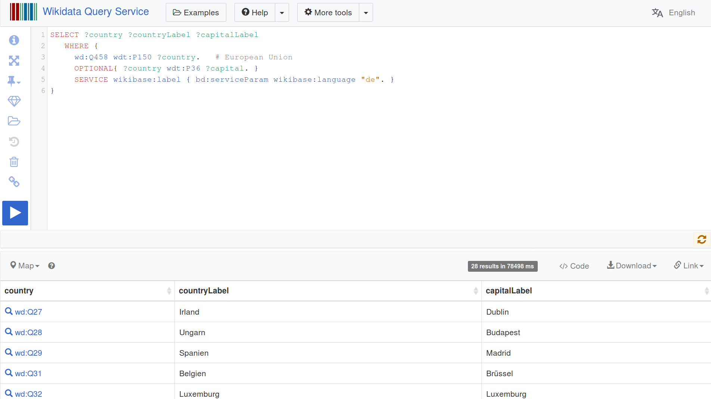</img></a>


---
# Abschluss


--
## Lektürehinweise
<small>

* Harald Klinke, "Datenbanken", in: *Digital Humanities: Eine Einführung*, hg. von Fotis Jannidis, Hubertus Kohle und Malte Rehbein. Stuttgart: Metzler, 2017, S. 109-127.
<br/>
<br/>
**Weitere Empfehlungen**
* Stephen Ramsay, "Databases", in: *The Companion to Digital Humanities*, ed. by Susan Schreibman, Ray Siemens and John Unsworth. Oxford: Blackwell, 2008. URL: http://www.digitalhumanities.org/companion/ (kostenfrei)
* Timo Hempel, "Normalisierung von Datenbanken", 2014. URL: https://www.tinohempel.de/info/info/datenbank/normalisierung.htm (gut erklärt)
<br/>
<br/>
**Darüber hinaus**
* René Steiner. *Grundkurs Relationale Datenbanken*. 6. Auflage. Braunschweig: Vieweg, 2006. [ER, SQL]

</small>


---
<br/>
<br/>
<br/>
<br/>
<br/>Christof Schöch, 2020
<br/>http://www.christof-schoech.de
<br/>
<hr/>
Lizenz: [Creative Commons Attribution 4.0](https://creativecommons.org/licenses/by/4.0/)
<br/>


</script>

<!-- DON'T TOUCH UNLESS YOU KNOW WHAT YOU'RE DOING :-) -->
</div>
<script src="lib/js/head.min.js"></script>
<script src="js/reveal.js"></script>
<script>
// Full list of configuration options available at:
// https://github.com/hakimel/reveal.js#configuration
Reveal.initialize({
    controls: true,
    progress: true,
    history: true,
    center: false,
    transition: 'slide', // none/fade/slide/convex/concave/zoom
    // Optional reveal.js plugins
    dependencies: [
        { src: 'lib/js/classList.js', condition: function() { return !document.body.classList; } },
        { src: 'plugin/markdown/marked.js', condition: function() { return !!document.querySelector( '[data-markdown]' ); } },
        { src: 'plugin/markdown/markdown.js', condition: function() { return !!document.querySelector( '[data-markdown]' ); } },
        { src: 'plugin/highlight/highlight.js', async: true, callback: function() { hljs.initHighlightingOnLoad(); } },
        { src: 'plugin/zoom-js/zoom.js', async: true },
        { src: 'plugin/notes/notes.js', async: true }
        ]
    });
Reveal.configure({ slideNumber: true });
</script>
</body>
</html>
